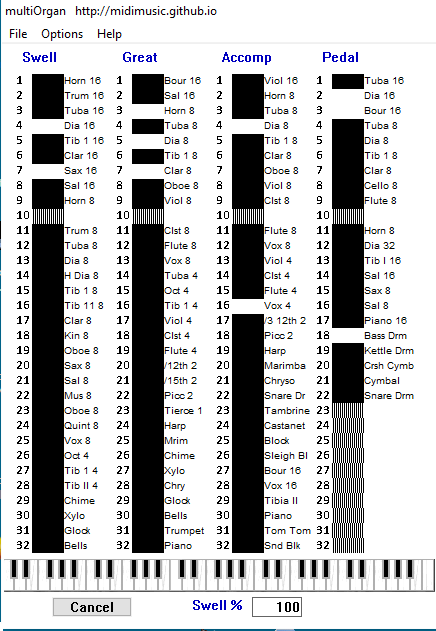

MultiOrgan
Author: David Back, June 2016
MultiOrgan, Multiple Organ Midi Player
MultiOrgan is a midi player which can accept and play almost any organ-like midi source. Input is via a standard midi port. A midi source can be the output from almost any standard midi player e.g. "Midi Player" or a specialised e-roll player such as my eplayWin32.As supplied multiOrgan is set up to imitate a selection of Estey, Miditzer, Wurlitzer and Hauptwerk organs. Any other organ can be added and will play provided you have an appropriate sound font (.sf2 format) file. sf2 is the most common and best standard sound font format. Many sound fonts are provided and the others may be downloaded from the internet. You can even make your own sound fonts, as I have. The screen keyboard allows you to audition your sound font and stop settings using a mouse. Provision is made for each manual to have its own sound font if necessary.
 MultiOrgan is designed to be the "other end" of eplayWin32 which will play all the Estey e-rolls available in my Estey organ music archive. EplayWin32 version 3.0 will also play all the Wurlitzer Band Organ e-rolls in my Wurlitzer Band Organ archive.
Output from eplayWin32 is sent to a midi port from whence it will connect to multiOrgan via a real or virtual midi cable. MultiOrgan can be running on the same computer as eplayWin32, or on any other computer.
MultiOrgan will also play midi files which have been produced by, or for, other organs. Simply route the output from any standard midi file player (I use "Midi Player" V3.6) to the input of multiOrgan and it can correctly play these files.
EplayWin32 and MultiOrgan were produced using Windows 10 but will work on all versions of Windows back to and including XP.
EplayWin32, multiOrgan and "Midi Player" will also work correctly under Wine when installed on an iMac or most Linux systems. (Tested and OK on Ubuntu and Debian Linux)
multiOrganV1_0setup.zip Download multiOrgan.
Completely free to download and to use.
Although multiOrgan can be played from a multi-manual midified organ console it currently has no pistons, (pistons are not needed when playing recordings) and so would not be very organist friendly.
You can play at least six copies of multiOrgan simultaneously, if each copy is located in its own folder then each one can be set up differently. This will give the equivalent of a 24 manual organ with the possibility of 24 different sound fonts. I cannot even begin to think of the endless musical possibilities this gives to someone with an inventive mind.